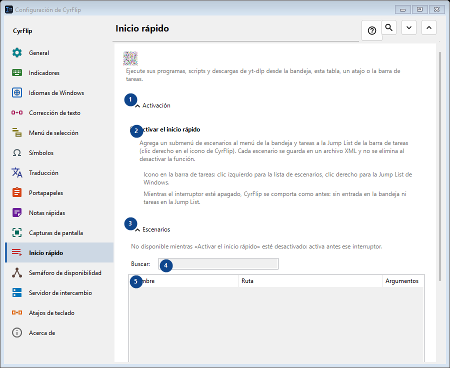
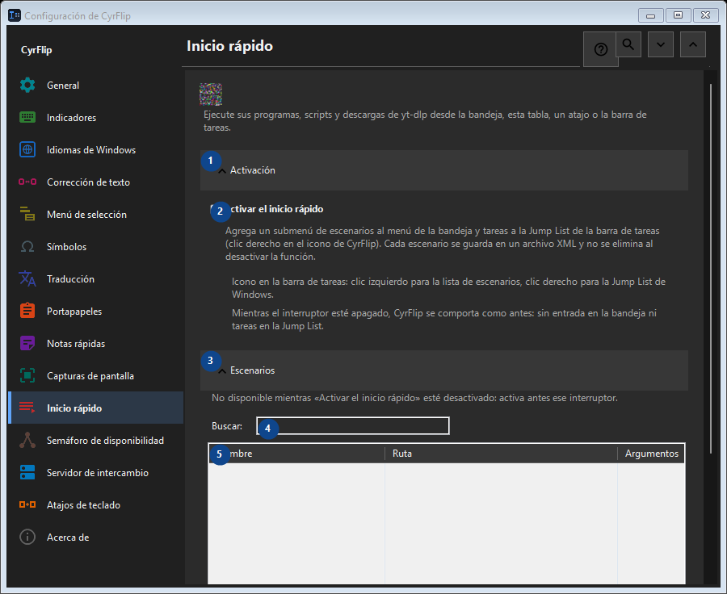

Inicio rápido
Para qué sirve
Ejecute sus programas, scripts y descargas de yt-dlp desde la bandeja, esta tabla, un atajo o la barra de tareas.


Orden de uso
Los ajustes se aplican de inmediato. No hay un orden obligatorio; usa los grupos siguientes.
Elementos
1. Activación
Usa este comando para la acción indicada. Lee cualquier confirmación antes de aceptarla.
Tus atajos2. Activar el inicio rápido
Agrega un submenú de escenarios al menú de la bandeja y tareas a la Jump List de la barra de tareas (clic derecho en el icono de CyrFlip). Cada escenario se guarda en un archivo XML y no se elimina al desactivar la función.
Tus atajos3. Escenarios
Usa este comando para la acción indicada. Lee cualquier confirmación antes de aceptarla.
Tus atajos4. Buscar
No disponible mientras «Activar el inicio rápido» esté desactivado: activa antes ese interruptor. Este elemento no está disponible. Activa primero la función o selecciona una entrada.
Tus atajos5. Inicio rápido
No disponible mientras «Activar el inicio rápido» esté desactivado: activa antes ese interruptor. Este elemento no está disponible. Activa primero la función o selecciona una entrada. Nombre / Ruta / Argumentos / Carpeta de trabajo / Admin / Atajo
Tus atajos6. Agregar...
No disponible mientras «Activar el inicio rápido» esté desactivado: activa antes ese interruptor. Este elemento no está disponible. Activa primero la función o selecciona una entrada.
Tus atajos7. Cambiar...
No disponible mientras «Activar el inicio rápido» esté desactivado: activa antes ese interruptor. Este elemento no está disponible. Activa primero la función o selecciona una entrada.
Tus atajos8. Ejecutar
No disponible mientras «Activar el inicio rápido» esté desactivado: activa antes ese interruptor. Este elemento no está disponible. Activa primero la función o selecciona una entrada.
Tus atajos9. Clonar
No disponible mientras «Activar el inicio rápido» esté desactivado: activa antes ese interruptor. Este elemento no está disponible. Activa primero la función o selecciona una entrada.
Tus atajos10. Eliminar
No disponible mientras «Activar el inicio rápido» esté desactivado: activa antes ese interruptor. Este elemento no está disponible. Activa primero la función o selecciona una entrada.
Tus atajos11. Mover arriba
No disponible mientras «Activar el inicio rápido» esté desactivado: activa antes ese interruptor. Este elemento no está disponible. Activa primero la función o selecciona una entrada.
Tus atajos12. Mover abajo
No disponible mientras «Activar el inicio rápido» esté desactivado: activa antes ese interruptor. Este elemento no está disponible. Activa primero la función o selecciona una entrada.
Tus atajos13. Exportar...
No disponible mientras «Activar el inicio rápido» esté desactivado: activa antes ese interruptor. Este elemento no está disponible. Activa primero la función o selecciona una entrada.
Tus atajos14. Importar...
No disponible mientras «Activar el inicio rápido» esté desactivado: activa antes ese interruptor. Este elemento no está disponible. Activa primero la función o selecciona una entrada.
Tus atajos15. Importar de OneClickRunner...
No disponible mientras «Activar el inicio rápido» esté desactivado: activa antes ese interruptor. Este elemento no está disponible. Activa primero la función o selecciona una entrada.
Tus atajos